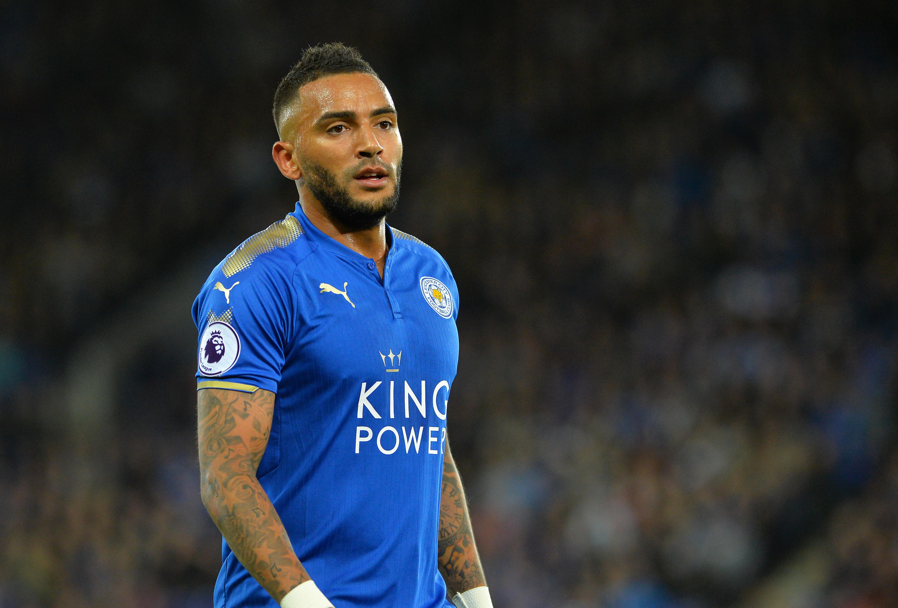
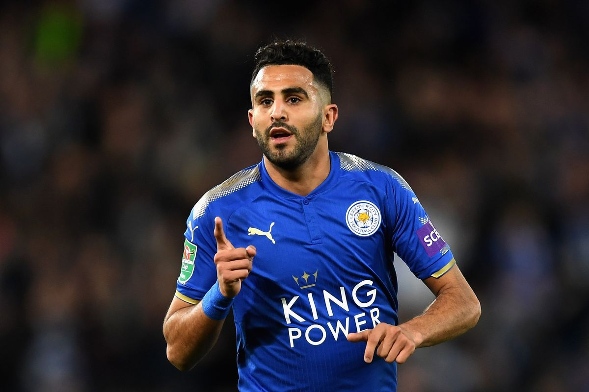

Leicester 2015/16
The 2015-16 season was Leicester City's 111th season in the English football league system and their 48th (non-consecutive) season in the top tier of English football.
During the season, Leicester participated in the Premier League for the second consecutive season, as well as the FA Cup and League Cup.
In what was described as one of the greatest sporting stories of all time, Leicester were confirmed as champions of the 2015-16 Premier League season on 2 May 2016,
finishing top of England's highest league for the first time in the club's history. The club was 5000-1 with bookmakers to win the division before the season kicked off.
The feat meant that Leicester would be playing in the UEFA Champions League the following season, a first for the club in their history.
The season also saw history be made for individual players within the team, as striker Jamie Vardy broke the record for consecutive games with a goal in the Premier League (11)
and winger Riyad Mahrez became the first African and first Algerian player to be the recipient of the PFA Players' Player of the Year.
Manager
On 13 July 2015, Leicester City announced Ranieri as the club's new manager on a three-year contract.
Ranieri's managerial debut with the club came in a 4-2 win over Sunderland on the opening match of the season on 8 August.
The strong start of the season saw the club at the top of the Premier League at Christmas, having scored in each of their first 17 games.
During this run, striker Jamie Vardy broke the Premier League record by scoring in 11 consecutive league matches, a run Ranieri compared to Gabriel Batistuta's during the 1994-95 season, while Ranieri was his manager at Fiorentina.
Leicester entered April at the summit of the Premier League and on 10 April 2016, they clinched a spot in the 2016-17 Champions League after a 2-0 away win over Sunderland
Leicester City clinched the Premier League title the following day after second-place club Tottenham could only manage a 2-2 draw against Chelsea, despite leading 2-0 at half-time.
This was the first time the club had won the title in their 132-year history. The team's success was described as a "fairytale" and the "most unlikely triumph in the history of team sport"
Starting-Lineup
- Tackles = Total Tackles (Tackles Won)
Kasper Schmeichel (GK)
Player Statistics :
Appearances = 38 (0)
Minutes Played = 3420
Clean sheets = 15
Goals Conceded = 36
Saves per match = 2.6%
Saves success = 73.3%
Danny Simpson (RB)

Player Statistics :
Appearances = 30 (0)
Minutes Played = 2613
Clean sheets = 13
Intercept = 94
Tackles = 52 (41)
Clearances = 125
Yellow/Red Card = 3/1
Wes Morgan (CB)
Player Statistics :
Appearances = 38 (0)
Minutes Played = 3420
Clean sheets = 13
Aerial battles won = 93
Blocks = 34
Clearances = 216
Yellow/Red Card = 3/0
Robert Huth (CB)
Player Statistics :
Appearances = 35 (0)
Minutes Played = 3150
Clean sheets = 13
Aerial battles won = 116
Blocks = 34
Clearances = 258
Yellow/Red Card = 8/0
Christian Fuchs (LB)
Player Statistics :
Appearances = 30 (2)
Minutes Played = 2720
Clean sheets = 15
Intercept = 98
Tackles = 99 (77)
Clearances = 122
Yellow/Red Card = 4/0
Riyad Mahrez (RM)

Player Statistics :
Appearances = 36(1)
Minutes Played = 3052
Goals = 17
Assists = 11
Big chances Created = 20
Touches = 1994
N'golo Kante (CM)
Player Statistics :
Appearances = 33 (4)
Minutes Played = 3020
Pass Completion = 81,6%
Touches = 2185
Interceptions = 156
Tackles = 175 (125)
Fouls = 43
Danny Drinkwater (CM)
Player Statistics :
Appearances = 35 (0)
Minutes Played = 3038
Pass Completion = 77.6%
Touches = 2541
Interceptions = 55
Tackles = 106 (74)
Fouls = 54
Mark Albrighton (LM)
Player Statistics :
Appearances = 34 (4)
Minutes Played = 2765
Goals = 2
Assists = 6
Big Chances Created = 11
Touches = 1994
Shinji Okazaki (ST)

Player Statistics :
Appearances = 28 (8)
Minutes Played = 2070
Goals = 5
Assists = 0
Shooting Accuracy = 35.3%
Offsides = 8
Jamie Vardy (ST)
Player Statistics :
Appearances = 36 (0)
Minutes Played = 3139
Goals = 24
Assists = 6
Shooting Accuracy = 57%
Offsides = 26
King Power Stadium
The King Power Stadium (also known as the Leicester City Stadium due to UEFA sponsorship regulations and formerly known as the Walkers Stadium) is a football stadium in Leicester, England.
It has been the home of Premier League club Leicester City since 2002, and has an all-seated capacity of 32,261. The stadium is an enclosed design, with two large 20-metre screens at either end of the pitch. Since 2021 the stadium has also been the primary home ground of Leicester City Women
Leicester City Kit 2015/16
Home Kit
Away Kit
Third Kit
1st GK Kit
2nd GK Kit